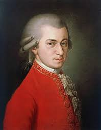

Klasszikus zeneszerzők

A klasszikus zene kiemelkedő zeneszerzői évszázadokon át formálták az európai zenekultúrát, a barokk barokktól a romantikán át a modern korig.
A legismertebb alkotók közé tartozik Johann Sebastian Bach, Wolfgang Amadeus Mozart, Ludwig van Beethoven, Frédéric Chopin és Liszt Ferenc, akik maradandót alkottak.
Énekesek
A leghíresebb énekesek közé olyan ikonikus előadók tartoznak, mint Michael Jackson, Elvis Presley, Whitney Houston, David Bowie, vagy a modern popikonok, például Mariah Carey.
A legsikeresebb zenészek listáját – akik több mint 75 millió albumot adtak el – számos amerikai és angol sztár erősíti, a Wikipedia pedig átfogó listát nyújt a műfaj legnépszerűbbjeiről.
Együttesek
A világ legnépszerűbb és legsikeresebb könnyűzenei együttesei közé tartozik a The Beatles, The Rolling Stones, Queen, U2, Blackpink, Straykids, és a BTS, melyek több tíz- vagy százmillió lemezt adtak el világszerte.
Ezen zenekarok maradandót alkottak a pop, rock és elektronikus zene terén.